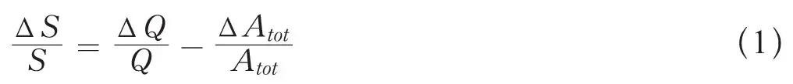
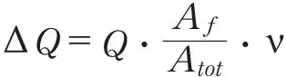
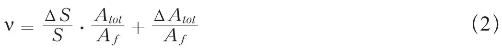
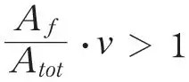
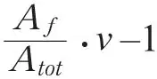

英文
英文冯·哈尔班等
编者按
实验已证实被中子轰击时铀核可以分裂为两个大核，并且裂变过程中会释放出次级中子。但是关于一个裂变事件中释放出多少中子，物理学家对此了解很少。但是这直接关系到自持裂变链式反应实现的可能性。物理学家汉斯·冯·哈尔班当时与费雷德里克·约里奥–居里及卢·科瓦尔斯基在巴黎一起工作，基于实验他对释放中子数进行了估测。答案是——平均3.5个——这意味着如果一个中子诱发一个裂变事件的可能性足够高，铀就可以发生链式反应。1940年德国入侵后，冯·哈尔班从法国逃亡到英国。 英文
最近的实验表明，慢中子轰击铀核引发核裂变可以释放出中子：次级中子在空间[1]、能量[2]、时间[3]上的性质都与初级中子所拥有或者可能获得的性质不同。这些实验没有给出每次核分裂所产生的中子的平均数量；虽然这个数量ν可能非常小（小于1），但是实验测量仍然可以得出正的结果。 英文
现在我们可以给出ν值的一些信息。让我们仔细思考一下在包围着初级中子源[1]的水溶液中减速的中子的密度分布曲线；曲线的面积S和Q·τ成正比，Q是每秒由中子源发射出的或在溶液中形成的中子数，τ是中子被俘获之前在溶液中度过的平均时间。假设溶液中只有依照1/υ定律吸收中子的原子核（这个法则的唯一例外将在不久后处理），τ正比于1/Σciσi，其中ci是吸收中子的原子核浓度（克原子每升），σi是所有速度为1的中子的俘获截面，指标i遍历溶液中原子核所致的各种中子吸收反应。用Ai代替ciσi，用Atot代替ΣAi，我们将得到：

上式忽略了所有包含诸如（ΔQ）2、ΔQ· ΔAtot等的高阶项。 英文
符号Δ代表我们在以前实验所使用的两种溶液（硝酸双氧铀和硝酸铵）中观察到的差值[1]。在Atot引入使Atot定义不明确的因素之前，ΔAtot可以忽略不计，这（硝酸双氧铀对硝酸铵的值）在数值上并不重要，并且可以采用算数平均值（Atot（铵）+ΔAtot）/2来进行简化。 英文
在ΔAtot这个量中，铀原子核由代表不同中子俘获模式的分离项所描述（如下）；设Af为引发裂变的俘获项。每个中子都有Aƒ/Atot的引起裂变的概率，而且因为一次单独的裂变过程平均释放ν个中子，这样产生的中子总数

，则式（1）可以写成如下形式：
让我们估算一下用上式来计算ν所必需的量。面积变化量ΔS/S可以从我们以前文章的图中得知，其误差小于20%（误差是由插值和外推的不确定性造成；为了便于外推，我们在曲线r = 29厘米处增加了一个实验点）。利用已知的浓度和俘获截面（氢、氮和氧），可以很容易地计算出铵溶液中的Atot值。Af等于cU（在我们实验中值是1.6）乘以安德森等人[4]在近期文章中给出的σf值。ΔAtot中包含了一个表示两种溶液中关于氢含量微小差异的项，以及三个与铀相关的项，即前面已经讨论过的裂变项Af，可以用最近得到的σct值来计算的热俘获项Act[5]，还有共振俘获项Ar，最后这一项需要一些解释。 英文
我们合理地假设：所有进入溶液的中子，几乎全部寿命都处于热态，并且在这个态被吸收。只要保证所涉及的原子核对中子的吸收满足1/υ定律，这个假设就是成立的；然而，对于25电子伏的中子有显著中子共振俘获的铀[6]，这个假设并不完全成立。因为以一定比例进入溶液的中子会被束缚在这种共振带中，并被共振吸收；因此，它们就不会到达热态。这个比例依赖于共振带宽和浓度cU；在我们的符号系统中，其数值等于Ar/Atot，我们已经有实验确定了它的数值并已在别处发表[5]。 英文
把上述所有的数值都代入公式（2）（以10–24平方厘米作为截面的单位），即：ΔS/S= 0.05 ± 0.01；Atot = 36 ± 3；Af =1.6 × 2 = 3.2；ΔAtot = 8.7 ± 1.4，可以分解为ΔAH = 1.2 ± 0.1；Act = 1.6 × (1.3 ± 0.45) = 2.1 ± 0.7，Ar = 6.4 ± 1.1，Af = 3.2，我们得到：
ν = 3.5 ± 0.7
我们无法推算Af的误差，因为安德森等人给出的σf值并不包含任何可能的误差值。σf中的任何误差都会对ν–1产生一个反比例的影响；但无论怎样，ν都会大于1。 英文
本文讨论的现象可以作为一种产生链式核反应的方法，我们在以前的文章中已经提到过它的重要性。这里报道的结果可以得到一些更进一步的结论。设想一种介质中只含有铀和一些与铀相比对中子的吸收可以忽略不计的原子核（比如，只含有一些用于减速的氢）。在这种介质中，如果

（Atot此处只含有铀的项），链式裂变反应将一直继续下去，直到到达介质的边界为止。我们的实验结果表明，这种条件非常有可能实现（
的值虽然为正，但是会非常小），特别是考虑到当介质中的铀含量增加时，由于共振吸收线的自蚀，Ar要比铀的其他项增加得缓慢得多。 英文
（王静 翻译；夏海鸿 审稿）